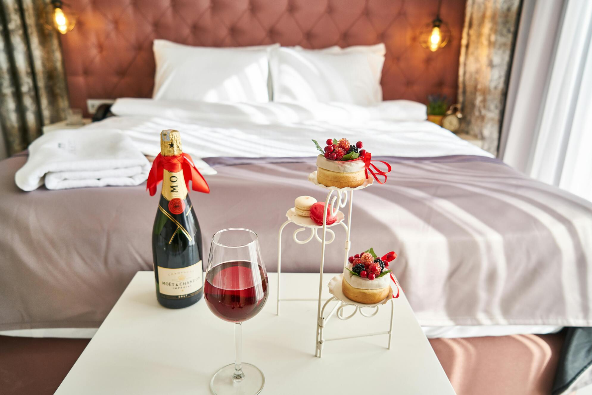

Check out our Menu

Imagine a luxury menu crafted to tantalize the senses and elevate dining into an exquisite experience. Begin with a selection of hors d'oeuvres featuring delicate foie gras mousse atop freshly baked brioche, accompanied by a drizzle of aged balsamic reduction. For the main course, savor the succulence of Wagyu beef, seared to perfection and served with truffle-infused mashed potatoes and a medley of seasonal vegetables. Indulge in a decadent dessert of artisanal chocolate soufflé, its velvety richness complemented by a scoop of Madagascar vanilla bean ice cream and garnished with edible gold leaf. Pair each course with fine wines curated from prestigious vineyards, or opt for a bespoke cocktail meticulously crafted to enhance the flavors of each dish. This luxury menu promises an unforgettable gastronomic journey, where every bite is a symphony of flavors and every sip a celebration of culinary artistry.
Available Anywhere
For those seeking a more extravagant dining experience, there are options such as private dining rooms in high-end restaurants or even personalized dining experiences arranged in unique locations. These venues often offer bespoke menus created by renowned chefs, paired with fine wines or champagne. The décor and service are meticulously curated to ensure every detail contributes to a memorable evening. This type of setting appeals to couples celebrating special occasions like anniversaries or proposals, where the exclusivity and attention to detail elevate the dining experience to something truly extraordinary.